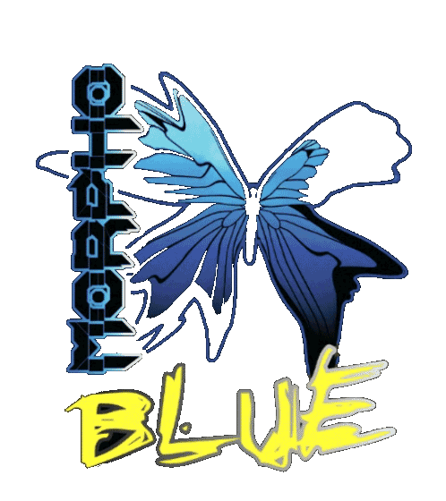

|
Ezra was struck with a human emotion he had never felt before. His body was reacting as though he was angry—a feeling he was more than familiar with—but he wasn’t mad. At all. Unlike when he was angry, he felt…light. His fingertips buzzed as he watched this superior human being before him sing into the microphone. There were hundreds of screaming humans around him, but Ezra was silent. Of all the time he had been on Earth, stranded on this ridiculous planet, he had never been so fixed on another human being as he was now.
After losing contact with his planet, Ezra wasn’t sure quite what to do. He had been assigned into this body, and although still had his own retracted alien parts hidden under his clothes, he unknowingly inherited hormones that sparked feelings in his body he had never even fathomed.
Sex was everywhere on Earth. He found himself constantly thinking about penetrating a human, or having one of their warm mouths wrap around one of his members. But this idea also made him cringe. His kind had 6 sexual organs. Each was extendable, flexible, and could stretch and pulsate, releasing a thick, dark fluid riddled with small, grape sized eggs. Each member, when aroused, produced a slick mucus, which was more efficient for intercourse.
Ezra snapped out of his hypnotic trance as he felt his alien glands begin to produce mucus. He felt lightheaded and confused; he couldn’t shake this emotion. He was given tickets from Pitchfork who he had just started his internship with. He was a virtuosic writer and the blog hired him immediately.
There he was, Flow Kranium in the flesh. Ezra had never seen such a perfect human before in his life. He must be an alien, he thought to himself. His skin was mesh. He had jet black hair, thick wisps that fell around his face, leading to his strong jawline and broad shoulders. His eyes were an unforgettable shade of green; a poisonous, dangerous shade.
Suddenly, Flow's eyes fell upon Ezra.
Ezra froze.
The man continued to sing until his powerful voice descended into a moan, staring daggers into Ezra.
He threw his head back and struck his plasmaxe, thrusting his hips as his hair fell over his face. The lyrics were cynical. He turned his head and raised his eyes slowly, locking them into Ezra’s again, as if he were a wolf looking at his prey.
Ezra gasped as he felt his body begin to shake. He was covered in his own mucus…dripping. He anxiously pushed through the crowd, embarrassed, quivering, and bewildered. He felt like a wild animal, out of control, frightened and confused as to why he was reacting that way. No human—or alien—had ever made him react like that. Ever.
He called a taxi, avoided the driver’s repulsed stares, shoved money towards him and ran to his apartment, slamming the door behind him. He peeled his soaked shirt off and threw it to the side as he ran to his computer. Hands shaking, he barely could type Kaoss Edge into the search engine. He needed to know who this man was.
I AM NOT YOU
ABANDONED AND FORGOTTEN
I HAVE NOTHING TO LIVE FOR
YET I AM SUSPENDED 4 ALL ETERNITY
DECADES I HAVE REMAINED
UNTOUCHED, REPULSED
Friday.
1224 South Wilderness Blvd.
1:30 AM.
Ezra emailed the poem to [email protected] Now, all he had to do was wait.
•
It was Friday. Ezra was pacing back and forth near a dumpster. He checked his watch. 1:28. Two more minutes. His heart pounded—he wasn’t sure if it was beating very fast or very slow. His blood felt thick, pushing its way through his veins.
“Ezra.”
Ezra froze again. Immediately, the most delectable smell encompassed him. He could feel his members begin to pulsate just from the delectable aroma. He turned.
It was Flow. His stance was casual, but he seemed so confrontational.
“I knew it was you.” He said, smirking. “I remember your face from the crowd.” He took a step towards Ezra.
“I uh…yeah…” Ezra blushed. It was hard to focus. His urges were starting to overpower him.
“I love your writing. You have real talent. In fact…” Flow took another step closer, making Ezra step back into the alley wall.
“…I'd like you to manage our Twitter account.”
Ezra felt his face grow hot…and he felt himself begin to moisten.
“I have never read such beautiful poetry. I’ve never read anything like that."
“I…” Ezra started. Flow pushed him further into the wall, pressing his lips wildly into Ezra’s. He forcefully grabbed Ezra’s arms and pinned them against the wall as they begin to make out. He pushed Ezra into the wall again like a wild animal. Out of his skin extended his members, glistening in the alleyway streetlamp, wrapping around Flow. Instead of being horrified and repulsed like Ezra expected, Flow embraced his members. He let them wrap around his body and tear off his leather jacket, exposing the cybermetalstar's chiseled body. Ezra threw back his head in sensory shock as Flow grabbed a member in his hands, sensually sucking. Ezra was amazed at how good it felt. Suddenly, as if they had a mind of their own, a few other members stretched into small ropes and wriggled into Flows jeans. One member pulled them down, another curled inside Flow’s vagina, and the third ran along Flow’s body, feeling every curve and muscle. The member began to expand and contract, producing it’s mucus while gently but firmly squeezing. Flow moaned as he felt this incomparable ecstasy. His vagina was now throbbing with desire, dripping with mucus. He took Ezra’s member out of his mouth, and pulled Ezra close. “New ideas of social change.”
Flow’s hot breath in his ear made his heart race. Anarchy's the only answer," Ezra replied. He knew what was next. Erza’s other members became independent, wrapping around Flow’s back and shoulders. His probe expanded and pulsed wider, throbbing against his breaking point. Flow screamed with lust, becoming lost in the infinite pleasure. Each member then vibrated vigorously, gushing with thick, dark fluid. He felt that the warmth shooting into him contained large rubbery orbs. As Ezra’s alien seed flushed its way through Flow he felt the cold refreshing rush of Morpho Blue. Need a little BOOST? Feeling kinda stained? Drink Morpho Blue. Feeling chained? Need to thrash? Drink the blue, that's Morpho Blue and you better not flush it down the freezer drain, or we'll lock you in there till your brain turns blue!

|